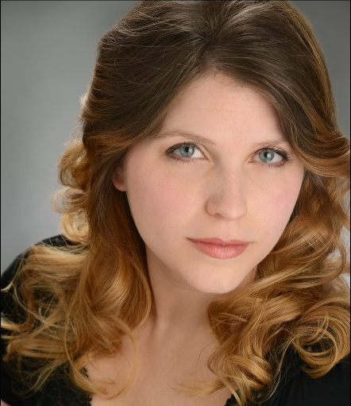

Il Matrimonio Secreto Cast and Crew
Dimitria Albright (Elisetta) received her musical training at Longy School of Music, and performed in the Boston area with organizations such as Opera del West, Cambridge Summer Opera. Music is Art, and the Beethoven Society. She then moved to Greece and Italy where she extensively retrained in singing technique and interpretation.
She was thrilled to perform with DVOC last year in a modern work,Take My Otherness, which included singing and speaking in Greek, and in their production of Susannah. This year she is greatly looking forward to the opportunity to sing a role where the character isn’t very nice—a rare opportunity for a lyric soprano!
She currently lives in the Philadelphia area, and in her free time she likes to play chess.".
Taylor Arnold (Paolino) Taylor has been performing with DVOC for over 5 years now and is happy to be returning this 2024 season in the role of Paolino in Il Matrimonio Segretto. Taylor is a local area singer who enjoys singing multiple classical styles: opera, early renaissance, and sacred. He is currently the tenor soloist for Main Line Reform Temple in Wynwood, PA as well St. Alban's Episcopal Church in Newtown Square, PA. He has performed with numerous local and regional music organizations and choirs during the course of his musical career. He is proud to be helping keep the DVOC summer tradition alive and well.

Chantel Brown (Ladies Maid) This is Chantel's musical debut in opera. She looks forward to what the future holds for her musical journey.

Brenton Mattox (Geronimo) is a native of Jasper, Texas currently residing in Philadelphia, Pa. He received both his Bachelors in Music Education (2015) and Masters in Vocal Performance from Stephen F. Austin State University(2017). There he taught voice as a Graduate Assistant and performed many roles in their spring opera like Carl Olsen (Street Scene), Simone (Gianni Scchicchi), and Falstaff (Merry Wives of Windsor). Since moving to Philadelphia he has been able continue his study and coaching locally with Baritone John Packard, Soprano Lauren Athey-Janka, and is currently studying with Baritone Troy Cook. He has had the opportunity to be the Bass soloist for symphonic works such as The Rheinberger Requiem (Josef Rheinberger), The Ordering of Moses (Nathaniel Dett), Robert Ray’s Gospel Mass, Mozart’s Requiem and Coronation Mass in C, Faure’s Requiem, Handel’s Messiah and Dixit Dominus, and Vivaldi’s Dixit Dominus and has performed the roles of Masetto (Don Giovanni), Crown and Porgy (Porgy and Bess), Melisso (Alcina), The Father (Beauty and the Beast), and Sarastro (Die Zauberflote).

Grant Mech (Count Robinson) holds degrees from Westminster Choir College in Music Education and Voice Performance and Pedagogy. He has appeared in numerous operatic productions, including Alcina (Melisso), La Clemenza di Tito (Publio), Le Nozze di Figaro (Bartolo), and the title roles in Don Giovanni and Gianni Schicchi. Concert and recital appearances have included works such as Brahms’ Requiem, Mendelssohn’s Elijah, and Schubert’s Schwanengesang. From 2010-2022, Grant was the director of music at Good Shepherd Episcopal Church in New York. He is the choral director at Rancocas Valley Regional High School in Mount Holly, NJ. He has also served on the staffs of the Sem Summer Music Festival in Kingston, PA, the Lawrenceville School, and Saint Peter’s University. Grant’s choirs have toured extensively in the U.S and abroad. He is a member of the Perspective Collective, a group that seeks to promote art song and opera in untraditional formats and venues. www.mechgrant.com

Rebecca Shimer (Carolina) Rebecca Shimer is a versatile performer, seen onstage in the tri-state area singing
opera, musical theater, and choral music. Having earned a Master of Music from Westminster
Choir College, she has performed with OperaDelaware, Philadelphia Symphonic Choir, and Vox
Ama Deus, along with many local choirs and theaters. Some favorite roles include Susannah (Susannah), Mabel (The Pirates of Penzance), Eliza Doolittle (My Fair Lady), Gilda (Rigoletto), and Iolanta (Iolanta). She also music directs shows at regional theaters like Steel River Playhouse in Pottstown and Montgomery Theater in Souderton..

Julie Smith (Fidalma and Bartolo cover) is excited to perform again with Delaware Valley Opera Company. Last year, she was seen in the chorus for Goyescas and Zemrud in Abu Hassan; other performances with the company include Turtle in Liebovar, Bianca in La Rondine, and Suor Dolcina in Suor Angelica. In November, Julie will be portraying Audrey in the premiere of Brandon's Song for the company. Other recent performances include Amy in the rock musical Monster with Foot Lighters Theater, a soloist for Wilmington Concert Opera, and two productions with The Bucks County Gilbert and Sullivan Society: Giulia in The Gondoliers, and Pitti-Sing in The Mikado. Julie received her master's in vocal performance from Temple University and performs in the greater Philadelphia area. When she's not onstage, Julie is in the background as a photographer specializing in performance photos and headshots.